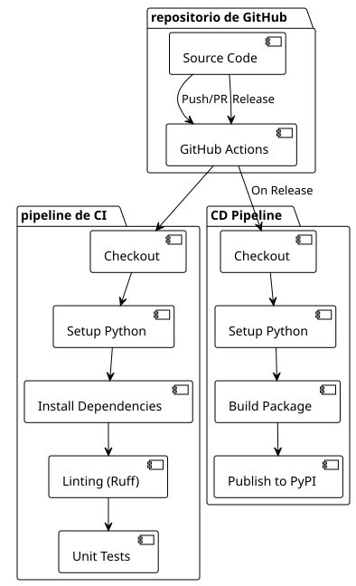

Parte 1 : Configurar un pipeline CI/CD sencillo para Python y PyPI
Publié le 17 July 2025
Introducción
La automatización de los procesos de desarrollo se ha vuelto indispensable en los proyectos modernos. Un pipeline CI/CD bien diseñado permite no solo detectar las regresiones temprano en el ciclo de desarrollo, sino también automatizar por completo el proceso de despliegue.
En este artículo, vamos a explorar cómo configurar una canalización completa con GitHub Actions para una aplicación Python, desde la integración continua (CI) hasta el despliegue continuo (CD) en PyPI.
Arquitectura del Pipeline
Nuestro pipeline se compone de dos flujos de trabajo distintos :
-
Pipeline de CI: Ejecutado en cada push y pull request
-
pipeline CD: desencadenado únicamente durante los releases de GitHub

Configuración del Pipeline de Integración Continua (CI)
Estructura del flujo de trabajo CI
El flujo de trabajo CI está diseñado para validar cada contribución al código. Aquí está su configuración completa:
name: CI/CD Pipeline
on:
push:
branches:
- main
pull_request:
branches:
- main
jobs:
build:
runs-on: ubuntu-latest
steps:
- name: Checkout code
uses: actions/checkout@v4
- name: Set up Python
uses: actions/setup-python@v5
with:
python-version: '3.x'
- name: Install dependencies
run: |
python -m pip install --upgrade pip
pip install -r requirements.txt
pip install ruff pytest pytest-mock
- name: Run Linting (Ruff)
run: ruff check .
- name: Run Tests (Pytest)
run: pytestAnálisis de los pasos CI
desencadenadores (on)
----
----
on:
push:
branches:
- main
pull_request:
branches:
- main
----
El pipeline se dispara en : - Cada push en la rama`main` - Cada pull request hacia`main`
Este enfoque garantiza que el código principal permanezca estable y que toda contribución sea validada antes de la integración.
==== 2. Entorno de Ejecución
----
runs-on: ubuntu-latest
Ubuntu Latest ofrece un buen compromiso entre rendimiento, costo y compatibilidad para la mayoría de los proyectos de Python.
==== 3. Extracción del código
```yaml
----
----
- name: Checkout code
uses: actions/checkout@v4
----
la acción`checkout@v4`obtiene el código fuente del repositorio. La versión v4 aporta mejoras de rendimiento y de seguridad.
==== 4. Configuración de Python
----
- name: Set up Python uses: actions/setup-python@v5 with: python-version: '3.x'
El uso de`'3.x'`permite usar automáticamente la última versión estable de Python 3, simplificando el mantenimiento.
==== 5. Instalación de las dependencias
```yaml
----
----
- name: Install dependencies
run: |
python -m pip install --upgrade pip
pip install -r requirements.txt
pip install ruff pytest pytest-mock
----
Este paso: Actualiza pip a la última versión Instala las dependencias del proyecto - Añade las herramientas de desarrollo (linting y pruebas)
==== 6. Linting con Ruff
----
- name: Run Linting (Ruff) run: ruff check .
**Ruff**es un linter de Python ultra-rápido escrito en Rust. Combina las funcionalidades de varias herramientas (Flake8, Black, isort) en una única herramienta de alto rendimiento.
==== Ejecución de las pruebas
```yaml
----
----
- name: Run Tests (Pytest)
run: pytest
----
Pytest ejecuta todo el conjunto de pruebas, garantizando que las modificaciones no introduzcan regresiones.
== Configuración del pipeline de despliegue (CD)
=== Estructura del Workflow CD
El flujo de trabajo CD se activa únicamente en las versiones de GitHub y automatiza la publicación en PyPI :
[source,yaml]
----
name: Publish to PyPI
on:
release:
types:
- published
jobs:
deploy:
runs-on: ubuntu-latest
steps:
- name: Checkout code
uses: actions/checkout@v4
- name: Set up Python
uses: actions/setup-python@v5
with:
python-version: '3.x'
- name: Install dependencies
run: |
python -m pip install --upgrade pip
pip install setuptools wheel twine
- name: Build and publish
env:
TWINE_USERNAME: __token__
TWINE_PASSWORD: ${{ secrets.PYPI_API_TOKEN }}
run: |
python setup.py sdist bdist_wheel
twine upload dist/*
----
=== Análisis de las etapas CD
==== 1. Disparador Release
----
on: release: types: - published
El pipeline CD solo se activa cuando se publica una release de GitHub. Este enfoque garantiza un control preciso de los despliegues.
==== 2. Instalación de las Herramientas de compilación
```yaml
----
----
pip install setuptools wheel twine
----
- **setuptools**: Herramientas de empaquetado de Python - **rueda**: Formato moderno de distribución de Python - **hilo**: Herramienta segura para subir a PyPI
==== 3. Configuración de la Autenticación
----
env: TWINE_USERNAME: __token__ TWINE_PASSWORD: ${{ secrets.PYPI_API_TOKEN }}
La autenticación utiliza un token de API PyPI almacenado como secreto de GitHub, más seguro que las credenciales clásicas.
==== 4. Compilación y publicación
```yaml
----
----
run: |
python setup.py sdist bdist_wheel
twine upload dist/*
----
- `sdist`: Cree una distribución de código fuente - `bdist_wheel`: Crea una wheel (distribución binaria) - `twine upload`Publica las distribuciones en PyPI
== Configuración del paquete de Python
=== Estructura del setup.py
Para que el pipeline funcione, su proyecto debe incluir un archivo`setup.py` :
[source,python]
----
from setuptools import setup, find_packages
with open("README.adoc", "r", encoding="utf-8") as fh:
long_description = fh.read()
setup(
name="playlist-downloader",
version="1.0.0",
author="Votre Nom",
author_email="votre.email@example.com",
description="CLI tool for managing YouTube playlists",
long_description=long_description,
long_description_content_type="text/plain",
url="https://github.com/cheroliv/playlist-downloader",
packages=find_packages(),
classifiers=[
"Development Status :: 4 - Beta",
"Intended Audience :: Developers",
"License :: OSI Approved :: MIT License",
"Operating System :: OS Independent",
"Programming Language :: Python :: 3",
"Programming Language :: Python :: 3.8",
"Programming Language :: Python :: 3.9",
"Programming Language :: Python :: 3.10",
"Programming Language :: Python :: 3.11",
],
python_requires=">=3.8",
install_requires=[
"typer>=0.9.0",
"yt-dlp>=2023.1.6",
"google-api-python-client>=2.70.0",
"google-auth-oauthlib>=0.7.1",
"pymonad>=2.4.0",
"pyyaml>=6.0",
],
entry_points={
"console_scripts": [
"playlist-downloader=cli:app",
],
},
)
----
=== puntos clave de `setup.py
1. **Metadatos**nombre, version, autor, descripción
2. **Dependencias**Lista de los paquetes requeridos
3. **Puntos de entrada**: Comandos CLI expuestos
4. **Clasificadores**: Metadatos para PyPI
== Seguridad con los GitHub Secrets
=== Configuración del Token PyPI
1. **Crear un token API en PyPI** :
- Inicia sesión en PyPI - Vaya a Configuración de la cuenta > Tokens de API Cree un nuevo token con los permisos apropiados
1. **Agregar el secreto en GitHub**:
- Configuración del repositorio > Secretos y variables > Acciones - Creen un nuevo secreto llamado`PYPI_API_TOKEN` - Pega tu token PyPI
[plantuml, secrets-flow, svg]
----
@startuml
!theme plain
actor Developer as dev
participant "Repositorio GitHub" as repo
participant "GitHub Actions" as actions
participant PyPI
dev -> repo : Configure PYPI_API_TOKEN secret
repo -> actions : Trigger CD pipeline on release
actions -> actions : Access secret securely
actions -> PyPI : Authenticate with token
PyPI -> PyPI : Validate and publish package
note over actions, PyPI
Token never exposed in logs
Automatic rotation possible
end note
@enduml
----
== Flujo de Despliegue Completo
=== Secuencia de Despliegue
[plantuml, deployment-sequence, svg]
----
@startuml
!theme plain
actor Developer as dev
participant "Git local" as git
participant "GitHub" as github
participant "GitHub Actions" as actions
participant PyPI
participant "usuarios finales" as users
dev -> git : git tag v1.0.0
dev -> git : git push origin v1.0.0
git -> github : Push tag
dev -> github : Create release from tag
github -> actions : Trigger CD pipeline
actions -> actions : Checkout code
actions -> actions : Setup Python environment
actions -> actions : Install build tools
actions -> actions : Build distributions (sdist + wheel)
actions -> PyPI : Upload to PyPI with token
PyPI -> PyPI : Validate and publish
users -> PyPI : pip install playlist-downloader
note over dev, github
Release creation can be automated
or done manually through GitHub UI
end note
@enduml
----
=== Estados del Pipeline
[plantuml, pipeline-states, svg]
----
@startuml
!theme plain
[*] --> Idle
Idle --> CI_Running : Push/PR created
CI_Running --> CI_Success : All checks pass
CI_Running --> CI_Failed : Linting/Tests fail
CI_Success --> Idle : Merge completed
CI_Failed --> Idle : Fix and retry
Idle --> CD_Running : Release published
CD_Running --> CD_Success : Package published
CD_Running --> CD_Failed : Build/Upload error
CD_Success --> Idle : Package available on PyPI
CD_Failed --> Idle : Fix and retry release
note on link #red : Blocks merge
note on link #green : Allows deployment
@enduml
----
== Buenas prácticas y optimizaciones
=== 1. Gestión de versiones
Utilice etiquetas Git semánticas :
----
git tag -a v1.2.3 -m "Release version 1.2.3" git push origin v1.2.3
=== 2. Pruebas de Matriz
Para probar en varias versiones de Python :
```yaml
----
----
strategy:
matrix:
python-version: [3.8, 3.9, "3.10", "3.11"]
----
=== 3. Caché de Dependencias
Acelere los builds con el caché :
----
- name: Cache pip dependencies uses: actions/cache@v3 with: path: ~/.cache/pip key: ${{ runner.os }}-pip-${{ hashFiles('**/requirements.txt') }}
=== 4. Entornos de despliegue
Utilice los entornos de GitHub para despliegues controlados :
```yaml
----
----
jobs:
deploy:
environment: production
runs-on: ubuntu-latest
----
== Caso de Uso y Arquitectura
=== Diagrama de Casos de Uso
[plantuml, use-cases, svg]
----
@startuml
!theme plain
left to right direction
actor "Desarrollador" as dev
actor "GitHub Actions" as ga
actor "Usuario final" as user
package "Sistema CI/CD" {
usecase "Ejecutar Linting" as lint
usecase "Ejecutar pruebas" as test
usecase "Paquete de construcción" as build
usecase "Publicar en PyPI" as publish
usecase "Crear versión" as release
}
dev --> lint : Pushes code
dev --> test : Pushes code
dev --> release : Creates release
ga --> build : On release trigger
ga --> publish : After successful build
user --> publish : Downloads package
lint .> test : triggers
test .> build : on success
build .> publish : on success
@enduml
----
=== Arquitectura de la Implementación
[plantuml, deployment-architecture, svg]
----
@startuml
!theme plain
cloud "GitHub" {
[Source Repository]
[GitHub Actions]
[Secrets Store]
}
cloud "PyPI" {
[Package Registry]
[Distribution Files]
}
node "pipeline de CI/CD" {
[Linting]
[Testing]
[Building]
[Publishing]
}
[Source Repository] --> [GitHub Actions] : Triggers
[GitHub Actions] --> [Linting]
[Linting] --> [Testing]
[Testing] --> [Building]
[Building] --> [Publishing]
[Publishing] --> [Package Registry] : Uploads
[Secrets Store] --> [Publishing] : Provides token
note as N1
Secure token-based
authentication
end note
[Secrets Store] .. N1
@enduml
----
== Monitoreo y depuración
=== Logs y monitoreo
GitHub Actions proporciona registros detallados para cada paso. Para depurar:
1. **Examine los registros**de cada paso
2. **Active el debug**con`ACTIONS_STEP_DEBUG`
3. **Utiliza artefactos**para guardar los archivos de compilación
----
- name: Upload build artifacts uses: actions/upload-artifact@v3 if: failure() with: name: build-logs path: build/
=== Notificaciones
Añade notificaciones de Slack o correo electrónico :
```yaml
----
----
- name: Notify on failure
if: failure()
uses: 8398a7/action-slack@v3
with:
status: ${{ job.status }}
webhook_url: ${{ secrets.SLACK_WEBHOOK }}
----
== Conclusión
La implementación de un pipeline CI/CD robusto con GitHub Actions transforma radicalmente la experiencia de desarrollo. Al automatizar el linting, las pruebas y el despliegue, usted:
- **Reduce los errores**en producción - **Acelere los ciclos**de desarrollo - **Mejore la confianza**en sus releases - **Facilita la colaboración**en equipo
Este pipeline puede adaptarse a diferentes tipos de proyectos Python ajustando las herramientas de linting, los frameworks de prueba o los destinos de despliegue.
La inversión inicial en la configuración de estos flujos de trabajo se rentabiliza rápidamente gracias al ahorro de tiempo y la reducción de los errores manuales durante los despliegues.
== Recursos Complementarios
- https://docs.github.com/en/actions[Documentación GitHub Actions] - https://packaging.python.org/[Guía de empaquetado de Python] - https://docs.pytest.org/[Documentación Pytest] - https://docs.astral.sh/ruff/[Documentación Ruff] - https://twine.readthedocs.io/[Documentación Twine]
✅ Pipeline funcional alcanzado! Ahora tienes un pipeline CI/CD simple que te permite automatizar tus pruebas y publicar tu paquete Python en PyPI directamente desde GitHub Actions.
Sin embargo, este pipeline sigue siendo intencionalmente minimalista. Aún no cubre algunos aspectos indispensables en un contexto profesional:
Pruebas multi-versiones de Python,
Análisis de seguridad automático,
Despliegue progresivo a través de Test PyPI,
Monitoreo y métricas del pipeline,
Automatización del versionado y la integración de las mejores prácticas modernas (pyproject.toml).
En la próxima parte, pasaremos al siguiente nivel. Aprenderás a transformar este pipeline básico en una verdadera cadena de despliegue industrial, robusta y segura, lista para proyectos de Python de producción.
----